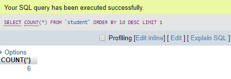

Overview
ကျွန်တော်တို့ကရိုးရှင်းတဲ့ select statements တွေနဲ့ where clause တွေရဲ့လုပ်ဆောင်မှုတွေနဲ့ကျွန်တော်တို့ရင်းနှီးပြီးသားဖြစ်ပါတယ်။SQL database တွေကကြီးမားတဲ့ပမာနရှိတဲ့ data တွေကိုသိုလှောင်နိုင်ပြီးတော့ကျွန်တော်တို့လိုချင်တဲ့ information တွေပါဝင်မှာပဲဖြစ်ပါတယ်။ကျွန်တော်တို့ database ထဲမှာ dataတွေကို reterieve လုပ်တဲ့နည်းလမ်းတွေကိုလေ့လာသွားမှာပဲဖြစ်ပါတယ်။ပထမဆုံး ordering ဆိုတာကတော့ ဥပမာကျွန်တောတို့ products တွေကို alphabetically အရသို့မဟုတ် price နဲ့အစဉ်လိုက်စီထားတာပဲဖြစ်ပါတယ်။Limiting ဆိုတာကတော့ကျွန်တော်တို့ data တွေကိုဘယ်အချိန်အထိထားမယ်ဘယ်အချိန်ထိ hold လုပ်ထားမယ်ဆိုတာကိုပဲဖြစ်ပါတယ်။Manipulating text တွေဆိုတာကတော့ standardizing output တွေလိုဖြစ်ပြီးဥပမာ text string တွေဖြစ်တဲ့ lowercase emails, uppercase last names တွေပဲဖြစ်ပါတယ်။ နောက်ပြီးအဲ့တာတွေက strings of text တွေကို munipulate ပြုလုပ်ပေးပြီးအရေးကြီးတဲ့အပိုင်းမှာပါဝင်တာလဲဖြစ်ပါတယ်။နောက်ထပ် aggregation ဆိုတာကတော့ row တွေအကုန်လုံးကိုကျွန်တော်တို့ group ပြုလုပ်ပြီးတော့ question တွေမေးနိုင်တာပဲဖြစ်ပါတယ်။ဥပမာ count values, sum values, maximum number, minimum number စတာတွေပဲဖြစ်ပါတယ်။data တွေကို grouping ပြုလုပ်တာတွေကို aggregation လို့ခေါ်ပါတယ်။dates တွေအတွက်ကတော့ reporting tools တွေကိုအသုံးပြုပါတယ်။SQL code တွေ date တွေတည်ဆောက်ဖို့အတွက်နဲ့ dates တွေနဲ့ရှာဖွေဖို့အတွက် tools တွေကိုထောက်ပံ့ပေးပါတယ်။ဥပမာကျွန်တော်တို့ကလွန်ခဲ့တဲ့ ၇ရက်က data တွေကိုပြန်ပြီးကြည့်ချင်တဲ့အခါမှာ retrieve ပြန်လုပ်ပြီးကြည့်နိုင်ပါတယ်။အဲ့ဒီ dynamic reporting တွေကအလွန်အသုံးဝင်တာပဲဖြစ်ပါတယ်။
Retrieving Results in a Particular Order
ပထမကျွန်တော်တို့က ordering results တွေယူတာကိုလေ့လာကြည့်ပါမယ်။အဲ့တာကတော့ specific order အတိုင်း data တွေကို retrieving ပြုလုပ်တာပဲဖြစ်ပါတယ်။phone content တွေကို order စီတာတွေ movies တွေကို relase ပြုလုပ်တဲ့ date အလိုက် order စီပြီးထားတာတွေကို retrieving ပြုလုပ်တယ်လိုခေါ်ပါတယ်။ နောက်ပြီးကျွန်တော်တို့က SQL ကိုအသုံးပြုပြီးတော့ text တွေ numeric တွေ data types စတဲ့ data တွေကို order ပြုလုပ်နိုင်ပါတယ်။result တွေကို order မစီခင်မှာကျွန်တော်တို့က results အချို့ကို retrieve ပြုလုပ်ခဲ့ဖို့လိုအပ်ပါတယ်။ကျွန်တော်တို့က SQL query ကိုစဖို့အတွက် select statement ကိုစပြီးတော့ရေးရပါမယ်။ကျွန်တော်တို့က column တွေကို order ပြုလုပ်ဖို့အတွက် ORDER BY ဆိုတဲ့ keywords ကိုအသုံးပြုပေးရမှာပဲဖြစ်ပါတယ်။အဲ့ဒီအခါမှာတော့ lowest number ကနေ highest number အတိုင်းစဉ်ပေးသွားမှာပဲဖြစ်ပါတယ်။text string တွေအတွက်ကတော့ alphabetically အရ A to Z စီပေးမှာပဲဖြစ်ပါတယ်။ascending တွေ descendingတွေပြန်စီချင်တယ်ဆိုရင်တော့အရင်ကတော့ASC/ DESC ဆိုတဲ့ keywords တွေကိုအသုံးပြုတာပဲဖြစ်ပါတယ်။ကျွန်တေ်ာတို့ ဥပမာထဲမှာရေးပြထားသလိုပဲ order စီတာတွေကို column နစ်ခုကို SQL statement တစ်ကြောင်းထဲသုံးပြီးတော့ဖော်ပြထားတာပဲဖြစ်ပါတယ်။
--SELECT <column> FROM <table> ORDER BY <column< [ASCIDESC];
SELECT * FROM products ORDER BY stock_count ASC;
--SELECT <column> FROM <table> ORDER BY <column< [ASCIDESC], <column< [ASCIDESC];
SELECT * FROM customers ORDER BY last_name ASC, first_name ASC:
Limiting the Number of Results
Database တွေကများစွာသော information တွေကိုသိုလှောင်ပေးတာဖြစ်ပြီးတော့ တစ်ခါတစ်ရံမှာကျွန်တော်တို့က row ထဲမှာရှိတဲ့ subset လေးကိုပဲလိုချင်ကြပါတယ်။ကံကောင်းစွာပဲကျွန်တော်တို့က website tracks တွေထဲမှာရှိတဲ့ information တွေအကုန်လုံးကို database ထဲမှာပဲ stores ပြုလုပ်ထားတာပဲဖြစ်ပါတယ်။ကျွန်တော်တို့က result တွေပြန်ပြီးထုပ်တဲ့အခါမှာထွက်လာတဲ့ result တွေကိုလည်းကန့်သတ်ပေးခဲ့လို့ရပါတယ်။အဲ့ဒီအတွက်ကျွန်တော်တို့ိက limit ဆိုတဲ့ keyword ကိုအသုံးပြုရမှာပဲဖြစ်ပါတယ်။ကျွန်တော်တို့က keyword ကို sql query ရဲ့နောက်ဆုံးမှာရေးပေးရမှာဖြစ်ပြီးတော့ သူ့ရဲ့နောက်မှာတော့ result ထုပ်ချင်တဲ့အရေအတွက်ကိုထည့်ပေးခဲ့ရမှာပဲဖြစ်ပါတယ်။conditions တွေမပါတဲ့ queries တွေထဲမှာလည်းပဲ LIMIT ကိုထားပေးခဲ့လို့ရတာပဲဖြစ်ပါတယ်။limit ကတော့ SQL database တွေအကုန်လုံးမှာတော့အလုပ်မလုပ်ပေးနိုင်ပါဘူး။အခြား database တွေမှာတော့ မတူညီတဲ့ keyword တွေနဲ့ syntax တွေကိုအသုံးပြုပါတယ်။
---SELECT * FROM <table> LIMINT <# of rows>
SELECT * FROM campaignes ORDER BY sales DESC LIMIT 3;
Paging Through Results
Limiting တွေကတော့ result တွေရဲ့ထိပ်ဆုံးအရာတွေကိုယူပေးတာဖြစ်ပြီးတော့ ကောင်းမွန်တဲ့ things တစ်ခုပဲဖြစ်ပါတယ်။ဒါပေမယ့်ကျွန်တော်တု့ိက multi-page report တွေကို generate ပြုလုပ်ချင်ရင်ဘယ်လိုလုပ်မလဲ?နောက်ပြီးကျွန်တော်တို့က blog တွေထဲမှာသို့မဟုတ် e-commerce sites တွေထဲမှာ post ကိုဘယ်နှစ်ခုပဲယူပါမယ်လို့သတ်မှတ်ခဲ့တာတွေကို အောက်ပါဥပမာထဲမှာရေးပြထားမှာပဲဖြစ်ပါတယ်။နောက်ပြီးဘယ် row ကနေစပြီးတော့ result ကိုထုပ်ပေးမယ်ဆိုတာကိုလည်းသတ်မှတ်ခဲ့နိုင်ပါတယ်။အဲ့ဒီအတွက်တော့ကျွန်တော်တို့က OFFSET ဆိုတဲ့ keyword ကိုသုံးပြီးတော့သတ်မှတ်ခဲ့နိုင်ပါတယ်။ ကျွန်တော်တို့တွေက limit တွေနဲ့ offset တွေကိုတွဲပြီးတော့အသုံးပြုတဲ့အခါမှာတော့ offset တွေကစတဲ့ row ကိုသတ်မှတ်ပြီးတော့ row ဘယ်နှစ်ခုထုပ်မယ်ဆိုတာကိုတော့ limit ကသတ်မှတ်ပေးတာပဲဖြစ်ပါ်တယ်။နောက်ထပ်နည်းလမ်းတစ်ခုကတော့ OFFSET ဆိုတဲ့ keyword ကိုမသုံးပဲအတိုကောက်အနေနဲ့ OFF Set အစား comma ကိုသုံးပြီးရေးနိုင်ပါတယ်။
SELECT * FROM <table< LIMIT < # of row> OFFSET <skipped rows>;
SELECT * FROM <table< LIMIT < # of row>, <skipped rows>;
What Are Functions_
ကျွန်တော်တု့ိဒီတစ်ခါမှာတော့ SQL keyword တွေနဲ့ပုံစံတူပြီး key way တွေမတူညီတဲ့အရာတွေကိုလေ့လာသွားမှာဖြစ်ပါတယ်။အဲ့တာတွေကိုတော့ funcition လို့ခေါ်ပါတယ်။function တွေကပုံမှန် keywords တွေနဲ့ကွဲပြားကြပါတယ်။ဘာ့ကြောင့်လဲဆိုတော့သူတို့က နည်းလမ်းမျိုးစုံနဲ့ query
တွေရဲ့ result တွေကို manipulate ပြုလုပ်နိုင်ပါတယ်။ကျွန်တော်တို့က syntax အနည်းငယ်ကိုပြောပြသွားပေးမှာဖြစ်ပါတယ်။keyword ဆိုတာကတော့အသုံးပြုတာအများဆုံးဖြစ်တဲ့ issue တစ်ခုဖြစ်ပြီးတော့ database ထဲမှာတစ်ခုခုလုပ်ဖို့အတွက်အသုံးပြုတာပဲဖြစ်ပါတယ်။ရေဘူယအားဖြင့်တော့
keyword တွေကိုအကြီးစားလုံးတွေနဲ့ရေးထားတာကိုတွေ့ရမှာပဲဖြစ်ပါတယ်။နောက်ထပ်တစ်ခုကတော့ operators တွေပဲဖြစ်ပါတယ်။operators တွေကတော့ comparisons တွေအတွက်ရိုးရှင်းတဲ့ actions တွေကိုလုပ်ဆောင်ပေးတာပဲဖြစ်ပါတယ်။နောက်ပြီးအဲ့တာတွေကရိုးရှှုင်းတဲ့
manipulation tasks တွေအတွက်လည်းလုပ်ဆောင်ပေးနိုင်ပါတယ်။နောက်ထပ် things ကတော့ function ဆိုတာပဲဖြစ်ပါတယ်။အဲ့တာကတော့ new concept တွေပဲဖြစ်ပါတယ်။အဲ့တာတွေက keywords တွေနဲ့တူပြီးတော့ names တွေရှိပြီးတော့ database တွေကိုတစ်ခုခုပြုလုပ်ဖို့အတွက်ပြောပေးတာတွေပဲဖြစ်ပါတယ်။ကျွန်တော်တို့က
select statement ကိုအသုံးပြုပြီးတဲ့အခါမှာတော့ database ထဲမှာရှိတဲ့ data တွေကိုတူညီတဲ့ format တွေနဲ့ database ထဲမှာပဲရိုးရှင်းစွာ return ပြန်ပေးပါတယ်။ function တွေကတော့ result တွေကို transofrm ပြုလုပ်ပေးပါတယ်.။function တွေကိုပိုပြီး
complex ဖြစ်တဲ့ operation တွေမှာအသုံးပြုပါတယ်။string တွေအကုန်လုံးကို uppercase နဲ့ပြုလုပ်တာတွေ particular column တွေမှာရှိတဲ့ number တွေအကုန်လုံးရဲ့ ပေါင်းခြင်းတွေကိုတွက်တာတွေစတာတွေမှာအသုံးပြုတာပဲဖြစ်ပါတယ်။table ထဲမှာရှိတဲ့ underlying
data တွေကတော့မပြောင်းလဲပါဘူး။ကျွန်တော်တို့က function name တွေကိုစရေးတဲ့အခါမှာတော့ upper case တွေနဲ့ရေးလဲရှိပြီးတော့အဲ့ဒီနောက်မှာတော့ parenthesis အစုံလိုက်ရေးပေးရပြီးတော့ အဲ့ဒီထဲမှာတော့ပြောင်းလဲမယ့် data column သို့မဟုတ် data ကိုထည့်ပေးရမှာပဲဖြစ်ပါတယ်။ကျွန်တော်တို့ုကဥပမာထဲမှာရေးပြထားသလို
UPPER ဆိုတဲ့ keyword နဲ့ function ကိုအသုံးပြုပြီးတော့ name တစ်ခုကိုပေးခဲ့မှာပဲဖြစ်ပါတယ်။အဲ့ဒီအခါမှာ function က string အသစ်တစ်ခုကိုတည်ဆောက်ပြီးတော့ name ကို uppercase တွေအဖြစ်ပြောင်းပေးသွားမှာပဲဖြစ်ပါတယ်။function ထဲမှာ differences တွေအများကြီးရှိပြီးတော့မတူညီတဲ့
relational database systems တွေရဲ့ကြားထဲမှာရှိတဲ့ operators တွေပဲဖြစ်ပါတယ်။
SELECT name FROM passport_holders;
SELECT UPPER(name) FROM passport_holders;
Adding Text Columns Together
ကျွန်တော်တို့ကတွေက database schema တွေထဲမှာ column definitions တွေကို restrict ပြုလုပ်မထားပါဘူး။ပြီးခဲ့တဲ့သင်ခန်းစာတွေထဲမှာကျွန်တော်တို့က human readable ပိုပြီးဖြစ်ဖို့အတွက် column name တွေကို AS keyword တွေသုံးပြီးတော့ထားခဲ့တာကိုလေ့လာခဲ့ပြီးဖြစ်ပါတယ်။အခုတစ်ခါမှာတော့ကျွန်တော်တို့ column နှစ်ခုထဲမှာရှိတဲ့ text တွေကိုပေါင်းပြီးရေးဖို့၇န်အတွက် operator တစ်ခုကိုအသုံးပြုနိင်ပါတယ်။အဲ့ဒီ operator ကိုတော့ concatenation Operator လို့ခေါ်ပါတယ်။concatenate ဆိုတာကတော့ things တွေကိုတစ်ခုနဲ့တစ်ခုအတူတစ်ကွချိတ်ဆက်ပေးဖို့အတွက်အသုံးပြုတာပဲဖြစ်ပါတယ်။ concatenation Operator ရဲ့ character ကတော့ two pipe vertical line နှစ်ခုပဲဖြစ်ပါတယ်။အဲ့တာက SQLite ထဲမှာရှိတဲ့ strings နှစ်ခုကိုပေါင်းပေးနိုင်တာပဲဖြစ်ပါတယ်။အခြား SQL environments တွေမှာလည်းမတူညီတဲ့ character တွေကိုအသုံးပြုဖို့လိုအပ်ပါလိမ့်မယ်။ဥပမာ alternative SQL Database မှာဆိုရင်တော့ plus sign နဲ့ CONCAT() ဆိုတာတွေကိုအသုံးပြုပါတယ်။concatenation operator တွေကိုစပြီးအသုံးပြုမယ်ဆိုရင်တော့ပထမကျွန်တော်တို့က value သို့မဟုတ် column တွေကိုသတ်မှတ်ပေးဖို့လိုအပ်ပါတယ်။ အဲ့ဒီနောက်မှာတော့ concatenation Operator ကိုအသုံးပြုပြီးတော့အဲ့ဒီနောက်မှာ second value သို့မဟုတ် column ကိုသုံးပြုပါတယ်။ကျွန်တော်တိုဥပမာထဲမှာ first_name နဲ့ last_name ကိုပေါင်းပြထားတာဖြစ်ပြီးတော့ value နှစ်ခုကို space ခြားနေဖို့အတွက် space ကိုပါထည့်ပောင်းပေးထားတာဖြစ်ပါတယ်။
-- <value or column> || < value or column>
--<value or column> || <value or column> || < value or column>
--<value or column> || < value or column> AS <alias>
SELECT first_name || " " || last_name AS "Full Name",
email AS "Email", phone AS "Phone"
FROM customers;
Finding the Length of Text
ဥပမာကျွန်တော်တို့က e-commerce site တစ်ခုမှာအလုပ်လုပ်နေတယ်ပဲဆိုပါဆို့။designer တွေကသူတို့ရဲ့ designe ကို customer profile page မှာ update ပြုလုပ်တဲ့အခါမှာမေးခွန်းတွေမေးလာမှာပဲဖြစ်ပါတယ်။သုူတို့က database ထဲမှာရှိတဲ့ကြီးမားဆုံး user name ရဲ့ length ကိုသိလိုတဲ့အတွက်မေးပါလိမ့်မယ်။အဲ့ဒီအခါမှာကျွန်တော်တို့က SQL function တွေကိုအသုံးပြုပြီး length ကိုခေါ်ပြီးတော့အလုပ်လုပ်ပေးနိုင်ပါတယ်။ကျွန်တော်တို့မှာ statement တစ်ခုရှိပြီးတော့အဲ့တာက customer table ထဲကနေ username ကိုယုူလာပေးတဲ့ statement တစ်ခုပဲဖြစ်ပါတယ်။နောက်ပြီးကျွန်တော်တို့က username နဲ့ length of user name ကို report ထဲမှာဖော်ပြပေးရမှာပဲဖြစ်ပါတယ်။အဲ့တာကိုရေးဖို့အတွက်ကျွန်တောတို့က length ဆိုတဲ့ function ကိုသုံးပြီးတော့ parameter ကို username ဆိုပြီးတော့ပေးခဲ့ရမှာပဲဖြစ်ပါတယ်။ကျွန်တော်တို့ဥပမာကိုအောက်မှာကြည့်နိုင်ပါတယ်။အဲ့ဒီထဲမှာတော့ length အရှည်ဆုံးတစ်ခုကိုထုပ်ပြပေးထားတာပဲဖြစ်ပါတယ်။ကျွန်တော်တို့ကတွေက length function တွေကိုနည်းလမ်းအမျိုးမျိုးနဲ့ အသုံးပြုနိုင်ပါတယ်။select protion ရဲ့နောက်မှာဖြစ်စေ work condition ရဲ့နောက်မှာဖြစ်စေထားပြီးတော့အသုံးပြုနိုင်ပါတယ်။function ထဲမှာတော့ value သို့မဟုတ် column name ကိုအသုံးပြုနိုင်ပါတယ်။
SELECT username, LENGTH(username) AS length FROM customers ORDER BY length DESC LIMIT 1;
Changing the Case of Text Columns
ကျွန်တော်တို့တွေ string တွေရဲ့ case တွေကိုပြောင်းချင်တဲ့အကြောင်းပြချက်တွေအမျိုးမျိုးရှိပါတယ်။ဥပမာ column ထဲမှာရှိတဲ့ text တွေအကုန်လုံးကို upper case ပြောင်းတာ lower case ပြောင်းတာစတာတွေပဲဖြစ်ပါတယ်။အဲ့ဒီနှစ်ခုလုံးကတော့စံဖြစ်တဲ့ output တွေဖြစ်ပြီးတော့ searching ပြုလုပ်တဲ့အခါမှာသုံးနိုင်ပါတယ်။case တွေကိုပြောင်းဖို့အတွက် function နှစ်ခုရှိပါတယ်။Upper ကတွေ uppercasing values သို့မဟုတ် column တွေအတွက်အသုံးပြုပါတယ်။Lower ကတော့ strings တွေကို lower case ပြောင်းဖို့အတွက်အသုံးပြုတာပဲဖြစ်ပါတယ်။ကျွန်တော်တို့ database ထဲမှာ query တွေကို run တဲ့အခါမှာတော့ email column ရဲ့ပထမဆုံးစလုံးမှာ အကြီးစလုံးဖြစ်နေတာကိုတွေ့ရပါမယ်။အဲတာကြောင့်ကွန်တေ်ာတို့က LIKE ဆိုတဲ့keyword ကိုသုံးပြီးတော့ စစ်ပေးထားတာပဲဖြစ်ပါတယ်။အဲ့တာကcase insesitive ဖြစ်နေတာကိုတွေ့ရမှာပဲဖြစ်ပါတယ်။ဒါပေမယ့်အခြား SQL database တွေမှာတော့ case ဖြစ်မှာမဟုတ်ပါဘူး။နောက်ထပ်နည်းလမ်းတစ်ခုကတော့ like keyword ကိုဖယ်ပြီးတော့ Equality operatorကို LOWER ဆိုတဲ့ function နဲ့တွဲပြီးအသုံးပြုတာပဲဖြစ်ပါတယ်။lower function မှာတော့ column ထဲမှာရှိတာကို lower case ကိုပြောင်းပေးမှာဖြစ်ပြီး upper function ကတော့ upper case ကိုပြောင်းပေးတာပဲဖြစ်ပါတယ်။အဲ့ဒီ email တွေကိုစံကြတဲ့ပုံစံနဲ့ Output မှာထုပ်ချင်ရင်တော့ကျွန်တော်တို့က select ပြုလုပ်တဲ့နေရာမှာ function ရေးခဲ့ရမှာပဲဖြစ်ပါတယ်။
--LOWER(<value or column>)
SELECT LOWER(email) FROM student WHERE LOWER(email) = "roster.ru23@gmail.com";
SELECT
Replacing Portions of Text
နောက်ထပ် handy thing တစ်ခုကတော့ကျွန်တော်တို့က text တွေရဲ့ portion တွေကိုအခြား text values တွေနဲ့အစားထိုးနိုင်တာပဲဖြစ်ပါတယ်။အဲ့တာက web pages တွေကို styling ပြုလုပ်ဖို့အတွက်ကောင်းမွန်တဲ့ thing တစ်ခုပဲဖြစ်ပါတယ်။အဲ့တာကို replace function လို့ခေါ်ပြီးတော့ substring function နဲ့တူပြီးတော့ value တစ်ခုပိုပါတာပဲဖြစ်ပါတယ်။ပထမဆုံး value ကတော့ ကျွန်တော်တို့က replace ပြုလုပ်ချင်တဲ့ column ရဲ့value ပဲဖြစ်ပါတယ်။ကျွန်တော်တို့ replace ပြုလုပ်မယ့် column ထဲမှာရှိတဲ့ text ပဲဖြစ်ပါတယ်။အဲ့ဒီနောက်မှာတော့ target string ပဲဖြစ်ပါတယ်။နောက်ဆုံးတစ်ခုကတော့ကျွန်တော်တို့ replace ပြုလုပ်ချင်တဲ့ string ပဲဖြစ်ပါတယ်။ဥပမာကျွန်တေ်ာတို့ address table တစ်ခုထဲမှာ state column တစ်ခုရှိတယ်ဆိုပါဆို့။ကျွန်တော်တို့က California state မှာရှိတဲ့ address တွေအားလုံးကိုရှာနိုင်တယ်ဆိုရင်ကျွန်တော်တို့က california သို့မဟုတ် California နဲ့ CA ဆိုတာကိုထည့်နိုင်ပါတယ်။ အဲ့ဒီ query ကိုကျွန်တော်တို့က run ကြည့်မယ်ဆိုရင်တော့ california နဲ့ CA မှာရှိတဲ့ data တွေအကုန်လုံးထွက်လာမှာပဲဖြစ်ပါတယ်။ ကျွန်တော်တု့ိတွေဟာ infromation တွေအကြောင်းကိုလေ့လာခဲ့ပြီးဖြစ်ပါတယ်။နောက်ပြီးကျွန်တော်တို့က function တွေအကြောင်းကိုလည်းလေ့လာခဲ့ပြီးဖြစ်ပြီးတော့ function တွေကပိုပြီးရှုပ်ထွေးတဲ့ operation တွေကို values တွေပေါ်မှာထမ်းဆောင်နိုင်ပါတယ်။function တွေကိုကျွန်တော်တို့ရဲ့ query အပိုင်းထဲမှာရှိတာကို select ပြုလုပ်ဖို့အတွက်အသုံးပြုနိုင်ပါတယ်။length ဆိုတာကတော့ value တွေရဲ့ length ကိုဖော်ပြဖို့အတွက်အသုံးပြုတဲ့ function ဖြစ်ပါတယ်။UPPER နဲ့ LOWER ဆိုတဲ့function တွေကတော့ upper case တွေ lower case တွေကိုပြောင်းဖို့အတွက်အသုံးပြုတာပဲဖြစ်ပါတယ်။နောက်ထပ် SUBSTR or substring ကတော့ text တွေရဲ့သေးငယ်တဲ့အပိုင်းတွေကိုယူဖို့ရန်အတွက်အသုံးပြုတာပဲဖြစ်ပါတယ်။အဲ့ဒီ function ထဲမှာ value တွေအများကြီးပါပြီးတော့ ပထမတစ်ခုကတော့ column name ဖြစ်ပါတယ်။နောက်ထပ်တစ်ခုကတော့ starting point နဲ့နောက်ဆုံးတစ်ခုကတော့ excerpt ကိုတည်ဆောက်ဖို့အတွက် ကျွန်တော်တို့လိုချင်တဲ့ substring ရဲ့ length ပဲဖြစ်ပါတယ်။နောက်ဆုံးတစ်ခုကတော့ replace function တစ်ခုဖြစ်ပြီးတော့ကျွန်တော်တို့ကအဲ့တာကို sections တွေရဲ့ string တွေကိုအခြား string တွေနဲ့အစားထိုးဖို့အတွက်အသုံးပြုတာပဲဖြစ်ပါတယ်။နောက်ထပ် arguments ဆိုတာကတော့တစ်ခါတစ်ရံမှာ parameter ကိုရည်ညွန်းပါတယ်။
Counting Results
ဒီတစ်ခါမှာတော့ကျွန်တော်တို့တွေ new function တွေ keywords တွေနဲ့ operators တွေကိုလေ့လာသွားမှာဖြစ်ပါတယ်။အဲ့တာတွေက report တွေကို generate ပြုလုပ်ဖို့အတွက်နဲ့ အရေးကြီးတဲ့ questons တွေကိုဖြေပေးဖို့ဖြစ်တဲ့ ဥပမာအရင်လကစာအုပ်ဘယ်နှစ်အုပ်ရောင်းရသလဲဆိုတာမျိုးတွေကိုဖြေဖို့အတွက်ကူညီးပေးမှာပဲဖြစ်ပါတယ်။နောက်ပြီးကျွန်တော်တို့
product တွေရဲ့ review ကိုပြန်ပြီးကြည့်တဲ့အခါမျိုးတွေမှာလည်းကူညီပေးပါလိမ့်မယ်။ ပထမဆုံးစပြီးလေ့လာမဲ့ function ကတော့ COUNT ဆိုတာဖြစ်ပြီးတော့အဲ့တာကိုမတူညီတဲ့နည်းလမ်းတွေအများကြီးနဲ့အသုံးပြုနိုင်ပါတယ်။အသုံးပြုတာအများဆုံးကတော့ table ထဲမှာရှိတဲ့
rows တွေအားလုံးကိုရေတွက်ဖို့အတွက်ပဲဖြစ်ပါတယ်။Counting ဆိုတာကတော့ query ထဲမှာရှိတဲ့ results တွေရဲ့ number ပဲဖြစ်ပါတယ်။နောက်ပြီး table မှာဆိုရင် unique ဖြစ်ပြီးတော့ distinct entries တွေလည်းဖြစ်ပါတယ်။နောက်ဆုံးကျွန်တော်တို့က aggregates
တွေသို့မဟုတ် things တွေရဲ့ collection တွေကိုပါရေတွက်နိုင်ပါတယ်။ကျွန်တော်တို့ရဲ့ table ထဲမှာ category ဘယ်နှစ်ခုရှိလဲဆိုတာမျိုးကိုသိချင်တဲ့အခါမှာတော့ DISTINCT ဆိုတဲ့ keyword ကိုအသုံးပြုပါတယ်။ counting function ကတော့ table ထဲမှာရှိတဲ့
row ကိုရေတွက်ပေးမှာဖြစ်ပြီး value မရှိတာကိုတော့ထည့်ပြီးမရေတွက်ပေးပါဘူး။

COUNT keyword is add in jQuery

Counting Groups of Rows
ကျွန်တော်တို့ဒီတစ်ခါမှာတော့ counting group တွေကိုလေ့လာသွားမှာဖြစ်ပြီးတော့ counting group ဆိုတာကတော့ဥပမာကျွန်တော်တို့ category တစ်ခုဆီမှာ products ဘယ်လောက်ရှိသလဲဆိုတာမျိုးတွေပဲဖြစ်ပါတယ်။ပထမဆုံးကျွန်တော်တို့က category ထဲမှာရှိတာတွေကို manually အရ count
လုပ်နိုင်ပါတယ်။နောက်ပြီးကျွန်တော်တို့ကcategory ထဲမှာရှိတဲ့ thing တွေကို GROUP BY ဆိုတဲ့ keyword ကိုသုံးပြီးတော့ group တွေအဖြစ်ပြုလုပ်နိုင်ပါတယ်။အဲ့ဒီ keyword က distinct ဆိုတာနဲ့တူညီပါတယ်။ဒါပေမယ့် key တော့ခြားနားမှုရှိပါတယ်။distinct
ဆိုတာကတော့ duplicates ဖြစ်နေတာတွေအားလုံးကိုဖယ်ရှားပြစ်တာပဲဖြစ်ပါတယ်။group by ကတော့တူညီတဲ့ row တွေကိုအတူတကွပေါင်းပြီးတော့အသုံးပြုတာဖြစ်လို့ count ပြုလုပ်ဖို့အတွက်ကျွန်တော်တို့ကအသုံးပြုနိုင်ပါတယ်။

Group of Categorys
Getting the Grand Total
ကျွန်တော်တို့ sum function တွေအလုပ်လုပ်ပုံကိုလေ့လာသွားမှာဖြစ်ပါတယ်။sum function တွေက numeric columnတွေတိုင်းမှာထည့်နိုင်ပါတယ်။နောက်ပြီးကျွန်တော်တို့က GROUP BY conjunction တွေကိုသုံးပြီးတော့ column တွေစုစုပောင်းတွေကိုတွက်နိုင်ပါတယ်။အဲ့ဒီလိုတွဲပြီးသုံးတဲ့အခါမှာတော့ကျွန်တော်တို့ကမတူညီတဲ့ grouped row တွေရဲ့ total values ကို generate ပြုလုပ်နိုင်ပါတယ်။များသောအားဖြင့်ကျွန်တောတို့က sum aggregate function တွေကို numeric column တွေအတွက်အသုံပြုပါတယ်။ နောက်ထပ် keyword တစ်ခုကတော့ HAVING ဆိုတာဖြစ်ပြီးတော့ aggregate functions တွေပေါ်မှာ conditions တွေပေါ်မှာအသုံးပြုဖို့အတွက်ပဲဖြစ်ပါတယ်။အဲ့တာကိုတော့ GROUP BY keyword ရဲ့နောက်မှာအသုံးပြုတာပဲဖြစ်ပါတယ်။ORDER BY keyword ရဲ့ရှေ့မှာလည်းပဲအသုံးပြုနိုင်ပါတယ်။အောက်မှာကျွန်တော်တို့ရေးပြထားတဲ့ code ထဲမှာကြည့်နိုင်ပါတယ်။
SELECT SUM(<numeric column>) AS <alis> FROM <table>
GROUP BY <another column>
HAVING <condition>
ORDER BY <column>
Calculating Averages
ကျွန်တော်တို့ဒီတစ်ခါမှာတော့ average function ကိုလေ့လာသွားမှာဖြစ်ပါတယ်။အဲ့တာအတွက်ကျွန်တော်တို့က average သို့မဟုတ် AVG ဆိုတာကိုသုံးနိုင်ပါတယ်။ကျွန်တော်တို့ ဥပမာထဲမှာတော့ cost တွေအတွက် average ကိုတွက်ပြထားတာပဲဖြစ်ပါတယ်။နောက်ပြီး products တစ်ခုချင်းဆီအတွက်ကျွန်တော်တို့က
average ကိုလည်းတွက်ပေးထားတာပဲဖြစ်ပါတယ်။ပြန်ကြည့်မယ်ဆိုရင်တော့ ကျွန်တော်တို့က average function တွေကို numeric column တွေပေါ်မှာ average value တွေရဖို့အတွက်အသုံးပြုနိုင်တာပဲဖြစ်ပါတယ်။နောက်ပြီးကျွန်တော်တို့က record တွေရဲ့ subset တွေပေါ်မှာ
average တွေကိုရှာချင်ရင်တော့ where clause ကိုထပ်ပြီးထည့်နိုင်ပါတယ်။
Average cost using with Group By keyword
Getting Minimum and Maximum Values
အပေါ်မှာပြီးခဲ့တဲ့သင်ခန်းစာထဲက average cost တွေထဲကနေကျွန်တော်တို့က largest value , smallest value တွေကိုရှာနိုင်ပါတယ်။အဲ့တာတွေကိုရှာဖို့အတွက်ကျွန်တော်တို့က MAX နဲ့ MIN function တွေကိုအသုံးပြုနိုင်ပါတယ်။အဲ့တာတွေက average နဲ့ပုံစံတူပါတယ်။ကျွန်တော်တို့ဥပမာရေးပြထားတဲ့
အထဲမှာတော့ column တစ်ခုထဲမှာပဲ function တွေအများကြီးကိုအသုံးပြုထားတာပဲဖြစ်ပါတယ်။အဲ့တာကြောင့်ကျွန်တော်တို့က column တစ်ခုထဲပေါ်မှာ function တွေအများကြီးကိုအသုံးပြုနိုင်တာပဲဖြစ်ပါတယ်။အဲ့လိုအသုံးပြုချင်းက single query တစ်ကြောင်းပေါ်မှာပိုပြီးပြည့်စုံအောင်
generate ပြုလုပ်ပေးနိုင်တာပဲဖြစ်ပါတယ်။အဲ့ဒီ numeric function တွေက power full tools တွေဖြစ်ပြီးတော့အသုံးပြုရတာရိုးရှင်းတာပဲဖြစ်ပါတယ်။အဲ့တာမျိုးတွေကို page တွေရဲ့ user rating တွေမှာလည်းအသုံးပြုကြပါတယ်။
Performing Math on Numeric Types
ကျွန်တော်တို့တွေ several operators တွေကို SQL ထဲမှာလေ့လာခဲ့ကြတာပဲဖြစ်ပါတယ်။ equlity , inequality, values နှစ်ခုကြားမှာဆက်နွယ်နေတဲ့ comparison operator တွေကိုကျွန်တော်တို့လေ့လာခဲ့ပြီးဖြစ်ပါတယ်။အဲ့ဒီ operator ထဲမှာတော့ less than, greater than တွေနဲ့ equal
to တွေပါဝင်တာပဲဖြစ်ပါတယ်။နောက်ထပ် text တွေကိုအတူတကွပောင်းဖို့အတွက် concatenation operator ကိုလည်းသိခဲ့ပြီးဖြစ်ပါတယ်။ အခုတစ်ခါမှာတော့ numeric type ပေါ်မှာရှိတဲ့ mathematical transformations တွေကိုပြုလုပ်ဖို့ရန်အတွက် operator တွေကိုအသုံးပြုနိုင်ပါတယ်။
additional operator ကိုတော့ number နှစ်ခုကိုပေါင်းဖို့ရန်အတွက်သုံးပြုပါတယ်။အဲ့တာကိုတော့ Plus symbol နဲ့ကိုယ်စားပြုပါတယ်။ နောက်ထပ်တစ်ခုကတော့ subtraction operator ဖြစ်ပြီးတော့ minus sign ကိုကိုယ်စားပြုပါတယ်။multiplication operator မှာတော့
star သို့မဟုတ် asterisk ကိုကိုယ်စားပြုပါတယ်။နောက်ဆုံးတစ်ခုဖြစ်တဲ့ division operator ကတော့ forward slash နဲ့ကိုယ်စားပြုပါတယ်။ကျွန်တော်တို့ဥပမာထဲမှာတော့ multiplication operator တွေကိုအသုံးပြုပြီးတော့ 1.06 နဲ့ cost တန်ဖိုးတွေကိုမြှောက်ပေးထားတာပဲဖြစ်ပါတယ်။နောက်ထပ်
ROUND ဆိုတဲ့ function ကတော့ value နှစ်ခုပါဝင်ပြီးပထမတစ်ခုကကျွန်တော်တို့ round လုပ်ချင်တဲ့ value နဲ့နောက်ထပ် value တစ်ခုကတော့ decimal တန်ဖိုးဘယ်နှစ်ခုထားမယ်ဆိုတာကိုသတ်မှတ်တာပဲဖြစ်ပါတယ်။ကျွန်တော်တို့အောက်ပါပုံထဲမှာကြည့်နိုင်ပါတယ်။
Differences Between Databases
ကျွန်တော်တို့က SQL တွေတော်တော်များများကို relational database systems တွေမှာအလုပ်လုပ်ကြပါတယ်။ဥပမာ Mysql, SQL Server, Postgers, နဲ့ SQLite တွေပဲဖြစ်ပါတယ်။ဒါပေမယ့် database system တွေမှာ dates တွေနဲ့အလုပ်လုပ်တဲ့နည်းလမ်းတွေအများကြီးရှိပါတယ်။SQL queries ထဲမှာ
dates တွေကိုရေးတဲ့ပုံစံတွေနဲ့အချို့ database တွေကတော့အခြားတစ်ခုပေါ်မှာ်နည်းလမ်းတစ်ခုနဲ့ရည်ညွန်းပြီးတော့ရေးကြပါတယ်။နောက်ပြီး date တွေကိုတွက်ဖို့၇န်အတွက်မတူညီတဲ့ function တွေကိုအသုံးပြုပြီးတော့ မတူညီတဲ့ database systems တွေကိုအသုံးပြုကြပါတယ်။human
readable formatted ဖြစ်ဖို့အတွက် dates တွေကိုဘယ်လို handle ပြုလုပ်ရမယ်ဆိုတဲ့မတူညီတဲ့ functions တွေအများကြီးရှိပါတယ်။အသုံးပြုတာအများဆုံးဖြစ်တဲ့ date format တွေကတော့ ကျွန်တော်တို့ ဖုန်းတွေ computer တွေမှာအသုံးပြုနေတဲ့ format ပဲဖြစ်ပါတယ်။
ကျွန်တော်တို့က ဒီနေ့ date ပေါ်မှာအခြေခံပြီးတော့ SQL queries ကို run ပြီးတော့ powerful things အဖြစ်ဆုံးတစ်ခုကိုလုပ်နိုင်ပါတယ်။ကျွန်တော်တို့က manually အရ current date တွေကိုရိုက်မထည့်ခဲ့ဘူးဆိုရင်တော့အချိန်တိုင်းကျွန်တော်တို့က query ကိုတည်ဆောက်နေရပါလိမ့်မယ်။အဲ့တာကြောင့်ကျွန်တော်တို့က
today date ကိုယူဖို့အတွက် SQL function ကိုအသုံးပြုနိုင်ပါတယ်။ date function ကနေဒီနေ့ date ကိုရဖို့အတွက် DATE ဆိုတဲ့ function ထဲမှာ now ဆိုတဲ့ string ကို pass ပြုလုပ်ပေးရမှာပဲဖြစ်ပါတယ်။sql တွေကမှာတစ်ခုနဲ့တစ်ခုမတူညီတဲ့အတွက်ကျွန်တော်တို့ရေးပြထားတဲ့ဥပမာထဲမှာတော့
CURRENT_DATE ဆိုတဲ့ function ကိုအသုံးပြုထားတာပဲဖြစ်ပါတယ်။
Calculating Dates
ဥပမာကျွန်တော်တို့မှာ e-commence site တစ်ခုရှိတယ်ဆိုတယ်ဆိုပါဆို့။အဲ့ဒီထဲကမှကျွန်တော်တို့က လွန်ခဲ့တဲ့ 7 ရက်သို့မဟုတ် 30 ရက်လောက်က sales တွေကိုလိုချင်တယ်ဆိုရင်တော့ကျွန်တော်တို့ဘယ်လိုပြုလုပ်ရမလဲ။ကျွန်တော်တို့က date function ကို now ဆိုတဲ့ time string ကိုအသုံးပြုတာကိုတွေ့ခဲ့ပြီးဖြစ်ပါတယ်။date function မှာအခြား argument တစ်ခုဖြစ်တဲ့ modifier ကိုလည်းထည့်ပေးနိုင်ပါတယ်။modifiers ကတော့ first argument ရဲ့ time string value ကိုပြောင်းဖို့အတွက်သို့မဟုတ် modifies ပြုလုပ်ဖို့အတွက်အသုံးပြုပါတယ်။ကျွန်တော်တို့က modifier နေရာမှာပြီးခဲ့တဲ့ ၇ ရက်ကအရာတွေကိုလိုချင်ရင်တော့ - 7 days ဆိုတာကိုထည့်နိုင်ပြီး နောက်ထပ် 7 ရက်ကိုထပ်လိုချင်တယ်ဆိုရင်တော့ +7 days ဆိုတာကိုထည့်ပေးရပါမယ်။ကျွန်တော်တို့က modifiers တွေကို addition တွေ subtraction တွေနဲ့အသုံးပြုနိုင်ပြီး နောက်ထပ် modifiers တွေကတော့ months တွေ years တွေထည့်ပြီးတော့အသုံးပြုတာပဲဖြစ်ပါတယ်။နောက်ပြီးကျွန်တော်တို့က modifiers တွေကိုပေါင်းပြီးတော့လည်းအသုံးပြုနိုင်ပါတယ်။အောက်ပါ ဥပမာထဲမှာတော့လွန်ခဲ့တဲ့ 14 ရက်အတွင်းမှာရှိတဲ့ပထမဆုံး ၇ ရက်အတွက် things တွေကိုထုပ်ပေးထားတာဖြစ်ပြီး ဒီနေ့အတွက်မပါတာဖြစ်လို့ -1 day ကိုထည့်ပေးထားတာဖြစ်ပါတယ်။modifiers တွေကိုနှစ်ခုခွဲပြီးတော့လည်းနောက်တစ်မျိုးရေးပြထားတာဖြစ်ပါတယ်။
SELECT COUNT(*) FROM order WHERE ordered_on
BETWEEN DATE("now","-1 days", "-7days")
AND DATE("now", "-1 day", "-7 days");
//Another way
SELECT COUNT(*) FROM order WHERE ordered_on
BETWEEN DATE("now","-14 days")
AND DATE("now", "-8 days");
Formatting Dates For Reporting
ကျွန်တော်တို့က query တွေကိုရေးပြီးတော့ကျွန်တေ်ာတို့က dates တွေကိုတွက်နိုင်ပါတယ်။အခုကျွန်တော်တို့က different date types တွေကိုဆက်ပြီးလေ့လာသွားမှာဖြစ်ပါတယ်။database ထဲကနေထွက်လာတဲ့ date format တွေကကျွန်တော်တို့ဆီကို cross ပြုလုပ်ပြီးလာပါတယ်။date datatypes သုံးမျိုးရှိပါတယ်။datatypes တွေက column တွေထဲမှာ store ပြုလုပ်ဖို့အတွက် data တွေရဲ့နည်းလမ်းတွေကိုကြိုတင်ဖော်ပြတာပဲဖြစ်ပါတယ်။ပထမနှစ်ခုကတော့ date နဲ့ time ပဲဖြစ်ပါတယ်။နောက်ထပ်တစ်ခုကတော့ date နဲ့ time ကိုပေါင်းပြီးတော့ဖော်ပြတာပဲဖြစ်ပါတယ်။format တွေကိုအောက်ပါဥပမာပုံထဲမှာဖော်ပြထားပါတယ်။ဒါပေမယ့်အဲ့ဒီ format တွေကကျွန်တော်တို့အတွက်ဖတ်ဖို့ခက်ခဲနေပါလိမ့်မယ်။programming languages တွေအများစုကတော့ date တွေရဲ့ type ကိုပြောင်းနိုင်ဖို့အတွက်ထောက်ပံ့ပေးနိုင်ပါတယ်။ကျွန်တော်တို့က date တစ်ခုကိုပဲလိုချင်တယ်ဆိုရင်တော့ date function ကိုသုံးနိုင်ပြီးတော့ time ကိုပဲလိုချင်တယ်ဆိုရင်တော့ time function ကိုသုံးနိုင်ပါတယ်။ type တွေကိုပြောင်းဖို့အတွက်တော့ string format time ဆိုတဲ့ STRFTIME() function ကိုအသုံးပြုနိုင်ပါတယ်။အဲ့ဒီထဲမှာပါတဲ့ပထမ argument ကတော့ string တွေကို format ပြောင်းပေးဖို့အတွက်ဖြစ်ပြီးတော့ "%d%m%Y" ဆိုပြီးတော့ရေးနိုင်ပါတယ်။ %d ဆိုတာကတော့ day အတွက်ဖြစ်ပြီး %m ဆိုတာကတော့ month အတွက်နဲ့ %Y ဆိုတာကတော့ year အတွက်ပဲဖြစ်ပါတယ်။နောက်ထပ်အဲ့ဒီ function ထဲမှာပဲ modifiers တွေကိုအသုံးပြုနိုင်ပါတယ်။
STRFTIME(<format string>,<time string>,<modifier>)
-< "01/04/2015"
STRFTIME(<format string>,"2015-04-01 23:12:01",<modifier>)
STRFTIME("%d%m%Y","2015-04-01 23:12:01",<modifier<)
-<"01/04/2015"


Can Request Example project File